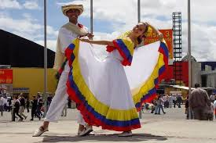

La Cumbia es uno de los géneros musicales más representativos de Latinoamérica y tiene su origen en la región del Caribe de Colombia. Este ritmo nació de la mezcla de tres culturas principales: la indígena, la africana y la española, lo que le dio un estilo único tanto en la música como en el baile. Al inicio, la cumbia se tocaba principalmente con instrumentos de percusión africanos, como los tambores, junto con instrumentos indígenas como la gaita y las maracas. Con el tiempo también se empezaron a usar instrumentos modernos como el acordeón, el bajo y los teclados, lo que permitió que el género evolucionara. El ritmo de la cumbia es alegre y bailable, por eso es muy común escucharla en fiestas, celebraciones y festivales. Además del ritmo, la cumbia también se caracteriza por su baile tradicional, donde las parejas se mueven de forma suave siguiendo el ritmo de la música. Con el paso del tiempo, la cumbia se expandió a muchos países de Latinoamérica como México, Argentina y Perú, donde surgieron diferentes estilos como la cumbia mexicana, la cumbia villera y la cumbia peruana. Hoy en día, la cumbia sigue siendo uno de los géneros musicales más populares de la región y continúa evolucionando con nuevos artistas y mezclas musicales.

| Tipo de Cumbia | Historia | Imagen |
|---|---|---|
| Cumbia Colombiana | Es la cumbia original que nació en la costa Caribe de Colombia. Se caracteriza por el uso de tambores, gaitas y maracas, mezclando culturas indígenas, africanas y españolas. |
|
| Cumbia Mexicana | La cumbia llegó a México y se adaptó con nuevos instrumentos como teclados y acordeón. Se volvió muy popular en fiestas y celebraciones. |
|
| Cumbia Villera | Nació en Argentina a finales de los años 90. Sus letras hablan sobre la vida en barrios populares y usa mucho sonido electrónico. |
|
| Cumbia Peruana | También llamada chicha. Mezcla la cumbia con ritmos amazónicos y andinos y usa mucho la guitarra eléctrica. |
|